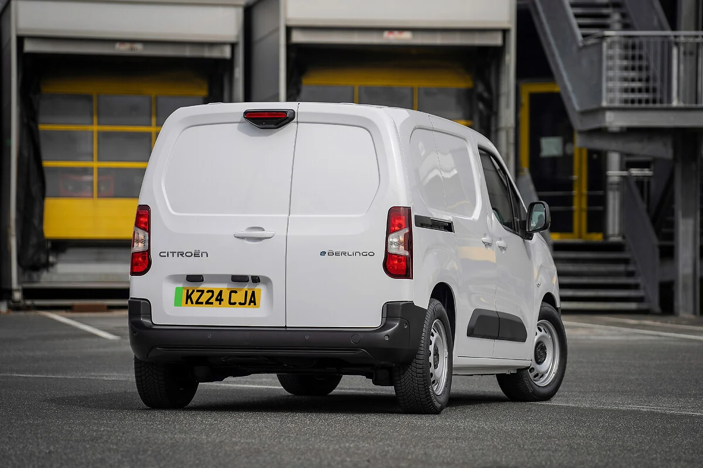

Why businesses choose Saving Tech for IT recycling
There are plenty of IT recycling companies in the UK. Most will collect your old equipment, issue a certificate, and move on. We do things differently: find out how.
Book a free collectionFree collections when you recycle at least 10 laptops, PCs & servers (any combination). It's also free to recycle almost all waste IT with us.
Sustainable IT recycling for UK business
We provide a secure, ethical, and sustainable IT recycling service to UK businesses. We bring a wealth of expertise from our decade in the data destruction and IT recycling sector, and a bold commitment to secure, Reuse Refurbish Recycle practices.
Advocates of the Reuse Refurbish Recycle approach
We recycle 100% of your IT assets. No waste is exported outside of the UK, we're leaders in the drive for a circular economy.
Free nationwide collections
Typically, we can retrieve the collection within 24 to 72 hours of the initial enquiry. Our fleet is equipped with full tracking capabilities, ensuring a thorough and audited solution.
We're carbon negative
For every kilo of CO2 our operations produce, we offset two making us one of the most sustainable suppliers in the market.
A reuse-first approach
Before any device we collect is broken down for materials recovery, it is assessed for refurbishment potential. Reuse is always the better environmental outcome. A laptop that goes back into active use avoids the energy, water, and raw materials required to manufacture a replacement. Scrapping is the last resort, not the default.
This is not a marketing position. It is the operational principle that every collection decision is based on. See our sustainability page for more on how we approach environmental outcomes.

Why does UK-only processing matter?
Everything we collect is processed within the UK. We do not export waste. That means shorter supply chains, full accountability at every stage, and no contribution to the global e-waste problem that characterises much of the industry.
We use our electric fleet wherever possible.
Why are we campaigning for circular economy policy?
Most IT recycling companies process waste and move on. We think the industry itself needs to change, and we are doing something about it.
The issues we care about are straightforward: too much e-waste still gets exported, too little equipment gets a second life, and too many businesses are not given clear enough guidance on what responsible disposal actually requires. We want the UK to lead rather than follow on circular economy legislation – so we are helping drive the change.
Sustainable IT asset recycling in the UK
Secure, carbon-negative IT recycling with free qualifying collections, data destruction and certificates always provided.
Free qualifying collections
Free collection for 10+ qualifying laptops, PCs or servers.
Certificates provided
You receive the documentation you need for your records.
Secure data destruction
Data-bearing devices are securely erased, degaussed or destroyed where required.
Carbon-negative recycling
Reuse-first processing, UK-based handling and twice the CO2 offset.